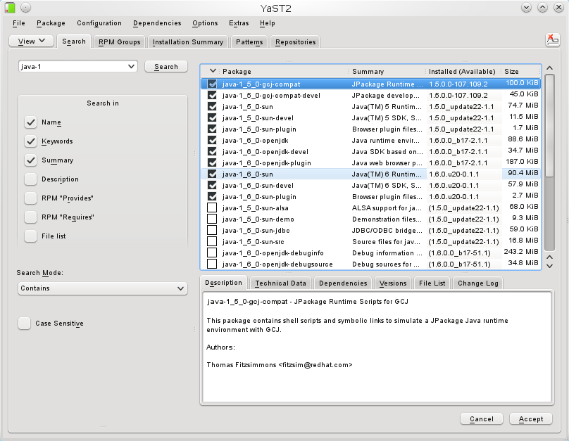

Alterne entre versões Java facilmente [update-alternatives]
by Gilberto C. Andrade on 08 junho 2010
Com o surgimento de versões e atualizações da máquina virtual java, preciso verificar a compatibilidade da mesma com o sistema de gestão de pessoal sendo implantado aqui na secretária.
Atualizado em: 01/12/2005 16:10 - CONSAD
Tocantins faz sua apresentação em TI
As experiências inovadoras que o Tocantins tem desenvolvido em Tecnologia da Informação (TI) foram apresentadas na manhã deste primeiro dia do LX Fórum do Conselho Nacional de Secretários de Estado de Administração (Consad). O representante da superintendência de Informática do Estado, Marcos Tiago, foi o responsável pela apresentação. Nela, ele demonstrou aos presentes as redes digitais de todo o Estado, incluindo as que circundam a sede do Governo (Palácio Araguaia), e das secretarias da Administração, Fazenda e Segurança Pública.
Em relação à Secad – Secretaria da Administração, Marcos Tiago apresentou o sistema de interligação de Recursos Humanos (Ergon) que está sendo implantado; citou ainda a experiência de Educação à Distância voltada para os servidores do Estado, onde o governo acaba de capacitar mais de 28 mil servidores no curso de Excelência no Atendimento e nas Relações de Trabalho.
Fonte: Shirley Cruz / Secad
Longo tempo hein? Pois é, nossa administração pública! Mas o Estado, nestes dois últimos anos, ficou politicamente conturbado (Tocantins chega à maioridade em clima de convulsão e indefinição política). Felizmente esta fase está passando e os projetos, aos poucos, retornam a sua normalidade.
O sistema usa como base a tecnologia Forms da empresa Oracle, que usa applet no cliente. Bom, primeiro precisamos instalar as versões que desejamos. Para facilitar adicione os seguintes repositórios ao Yast:
| Nome | Repositório |
| Java:sun:Factory | http://download.openSUSE.org/repositories/Java:/sun:/Factory/openSUSE_11.2/ |
| JPackages | http://download.openSUSE.org/repositories/Java:/packages/openSUSE_11.2 |
Veja o que tenho em meu ambiente:

{kind=link}
Agora, como alternar entre as versões sem ter que manualmente mexer em variáveis de ambiente?
Qual versão estou usando?
gilberto@SUGEP-DMASI:~> java -version java version "1.5.0_22" Java(TM) 2 Runtime Environment, Standard Edition (build 1.5.0_22-b03) Java HotSpot(TM) Server VM (build 1.5.0_22-b03, mixed mode) gilberto@SUGEP-DMASI:~> |
Para verificar de forma geral como o ambiente está, além da figura acima, vamos abrir um terminal como usuário root e checar através do comando update-alternatives:
gilberto@SUGEP-DMASI:~> su - Password: SUGEP-DMASI:~ # update-alternatives --list java /usr/lib/jvm/jre-1.6.0-openjdk/bin/java /usr/lib/jvm/jre-1.5.0-gcj/bin/java /usr/lib/jvm/jre-1.6.0-sun/bin/java /usr/lib/jvm/jre-1.5.0-sun/bin/java SUGEP-DMASI:~ # update-alternatives --list javac /usr/lib/jvm/java-1.5.0-gcj/bin/javac /usr/lib/jvm/java-1.6.0-openjdk/bin/javac /usr/lib/jvm/java-1.6.0-sun/bin/javac /usr/lib/jvm/java-1.5.0-sun/bin/javac SUGEP-DMASI:~ # update-alternatives --list javapluging No alternatives for javapluging. SUGEP-DMASI:~ # update-alternatives --list javaplugin /usr/lib/jvm/jre-1.6.0-openjdk/lib/i386/IcedTeaNPPlugin.so /usr/lib/jvm/java-1.6.0-sun-1.6.0/jre/lib/i386/libnpjp2.so /usr/lib/jvm/java-1.5.0-sun-1.5.0/jre/plugin/i386/ns7/libjavaplugin_oji.so SUGEP-DMASI:~ # |
Para saber mais sobre este comando digite:
man update-alternatives
|
Agora vamos usá-lo para alternar entre as versões. Note nas opções acima que podemos alternar não somente a máquina virtual, mas também o plugin para navegadores de internet. Então mãos a obra! Para alternar usaremos a opção --config:
SUGEP-DMASI:~ # update-alternatives --config java There are 4 alternatives which provide `java'. Selection Alternative ----------------------------------------------- + 1 /usr/lib/jvm/jre-1.6.0-openjdk/bin/java 2 /usr/lib/jvm/jre-1.5.0-gcj/bin/java 3 /usr/lib/jvm/jre-1.6.0-sun/bin/java * 4 /usr/lib/jvm/jre-1.5.0-sun/bin/java Press enter to keep the default[*], or type selection number: 3 Using '/usr/lib/jvm/jre-1.6.0-sun/bin/java' to provide 'java'. SUGEP-DMASI:~ # |
Abra um novo terminal e verifique a versão atual:
gilberto@SUGEP-DMASI:~> java -version java version "1.6.0_20" Java(TM) SE Runtime Environment (build 1.6.0_20-b02) Java HotSpot(TM) Server VM (build 16.3-b01, mixed mode) You have mail in /var/spool/mail/gilberto gilberto@SUGEP-DMASI:~> |
Podemos usar o utilitário update-alternatives para gerenciar outros links no sistema, mas o post já ficou extenso. Na próxima podemos mostrar como gerenciar links manualmente.